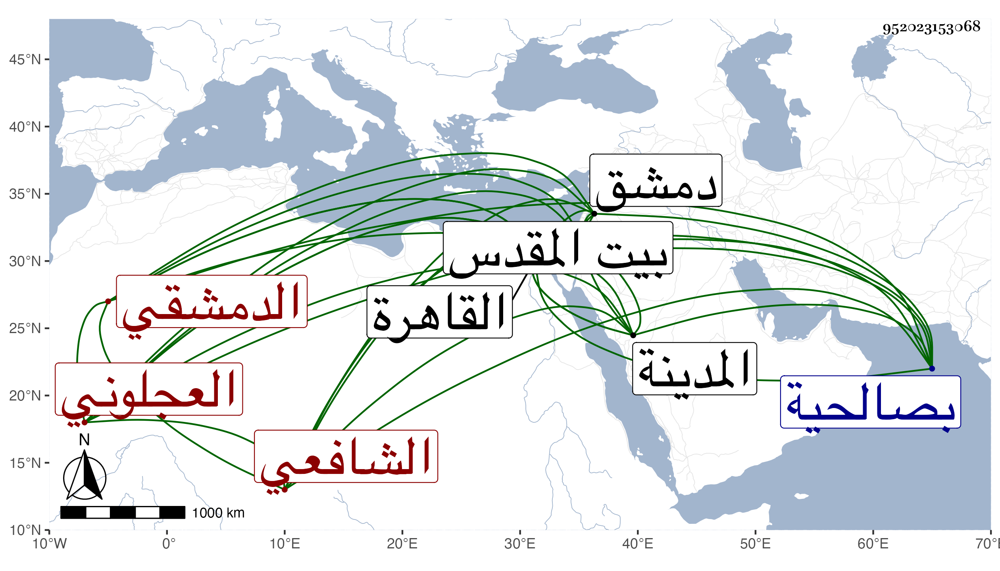

0902Sakhawi.DawLamic.ITO20230111-ara1.EIS1600.952023153068
Biography ID: 952023153068
418
عبد الرحمن بن يوسف بن عبد الله العجلوني الأصل الدمشقي الشافعي نزيل المدرسة المزهرية من القاهرة ويعرف بالشامي . ولد سنة إحدى وستين وثمانمائة بصالحية دمشق ونشأ بها فحفظ القرآن والشاطبيتين والدرة المضية في القراءات الثلاث المرضية لابن الجزري مع مقدمته في التجويد والتنبيه وربع المنهاج وألفية النحو وتلا بالعشر افرادا وجمعا على عمر الطيبي وبالقاهرة على جعفر السنهوري ولكنه لم يكمل عليه وعن أولهما أخذ في النحو واشتغل في الفقه عند الجوجري وعبد الحق وغيرهما ، وكان قدومه القاهرة في سنة ست وثمانين فحج ثم رجع بعد زيارته المدينة وبيت المقدس وأقرأ مع اشتغال الطلبة بالعربية فقرأ عليه نور الدين الطرابلسي الحنفي التوضيح لابن هشام وقرأ على قطعة كبيرة من البخاري قراءة تدبر وتأمل وكذا قرأ على الديمي ونعم الرجل فضلا وسكونا وتقنعا .
